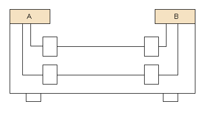

Textos expositius. Paràgrafs de comparació (contrast)


Fixeu-vos en l'esquema següent:

Dues entitats o fenòmens són confrontats entre ells, i se'n fan notar les diferències i les semblances. Comparar és sempre posar cara a cara dos conceptes, dos objectes, dos fets o dos fenòmens... I buscar-ne les semblances i les diferències.
Els paràgrafs o textos que tenen l'estructura de comparació ens indiquen les semblances i diferències entre dos o més objectes, situacions, idees o persones, comparant-los segons un determinat nombre de categories. Aquest tipus de paràgrafs solen anar introduïts per una frase que presenta els objectes que se sotmeten a comparació.
Podem trobar dos tipus d'esquemes que responen a dues estructures de comparació diferents:
a) Descripcions contraposades: Cada una de les categories que es compara s'analitza per separat, comparant els dos o més objectes i mostrant-ne les diferències.
b) Descripcions separades: Cada objecte és analitzat per separat. Es construeixen dues frases que tenen idèntica estructura, amb els termes de la comparació presentats en paral
En ambdós casos és possible resumir el contingut mitjançant un quadre d'objectes i categories:
|
Objecte 1 |
Objecte 2 |
Objecte n... |
|
|
Categoria 1 |
a |
b |
|
|
Categoria 2 |
c |
d |
|
|
Categoria 3 |
e |
f |
Si en féssim una comparació per descripcions contraposades seguiríem aquest ordre: 1, 2, (a-b), (c-d), (e-f).
En canvi, si la féssim per descripcions separades tindríem: 1 (a, c, e) - 2 (b, d, f).
|
Vegem-ne un exemple: Comparació per descripcions contraposades Retrat d'una rata tipus Les nostres veïnes d'escala acostumen a ser rates comunes (Rattus norvegicus) o rates negres (Rattus rattus), que es diferencien per la gràndària i no pel color, com podrien fer pensar els noms. Les primeres són les rates de claveguera i d'elles es diu que, després de la seva entrada a Europa cap al segle xviii i a la Península Ibèrica el xix, van empènyer les autòctones, les negres o de port, cap als litorals, desterrant-les de les zones interiors. La rata comuna, a diferència de la negra, té la cua més curta que el cos i el cap, les orelles menudes i és xata. La negra té el pèl més fi i més clar i es troba en els edificis propers als ports. Aquestes necessiten 15 grams de menjar diaris, preferiblement fruita i aliments amb aigua. Les seues cosines de claveguera mengen i beuen el doble. Són omnívores, però els aliments que més aprecien són els cereals. Comparació per descripcions separades El teixit nerviós Totes les neurones tenen la mateixa estructura bàsica: un cos cel J. Cuello Subirana (1989). Atlas de biología. Edibook. | |
|
Un text que es basi en l'estructura de la comparació, tal com indicàvem en l'esquema, ha de mostrar els dos (o més) termes comparats (els dos requadres grans) i, tot seguit, assenyalar els diferents trets que els igualen (semblances) o els separen (diferències). Convé que recordem que els termes comparats poden ser diversos, no necessàriament dos. | |
Segons com estigui disposada la informació, la comparació pot ser:
| – | alternativa: els fets o fenòmens tenen el mateix valor; |
| – | adversativa: una de les dues opcions apareix com a més important o preeminent en relació amb l'altra; |
| – | d'analogia: un dels fets o fenòmens que es comparen serveix d'il |
 Exercicis
Exercicis
1. Llegiu atentament el text següent i resoleu les qüestions que us plantegem més avall:
| ||||||||

Al llarg del text que heu llegit es confronten dues maneres d'expressar-se les persones: la llengua oral i la llengua escrita. Hi ha una comparació entre aquests dos codis lingüístics. Digueu en quins paràgrafs podríem trobar cada una de les següents informacions:
a) en quines situacions s'utilitza cada un;
b) quin dels dos codis pot ser més important per a alguns usos;
c) quin és l'ordre en què s'han desenvolupat entre les persones (tant històricament com personalment).

2. Feu un quadre comparant de manera esquemàtica la informació sobre tots dos codis lingüístics.
3. Digueu quin tipus de comparació (alternativa, adversativa o d'analogia) us sembla que s'utilitza en aquest text sobre la llengua oral i la llengua escrita.
4. Busqueu els elements de la comparació i resumiu el text següent. Feu- ho seguint aquests passos:
a) Llegiu bé el títol i pregunteu-vos primer què en sabeu.
b) Feu-ne una lectura global mirant d'aclarir el significat dels mots desconeguts i de les oracions.
c) Imagineu-vos l'esquema per als textos comparatius que us hem fet (si cal, reproduïu-lo en un paper).
d) Busqueu en el text les marques dels textos comparatius.
e) Identifiqueu les semblances i les diferències entre els diversos elements que es comparen.
f) Escriviu un breu resum de cada paràgraf.
g) Articuleu les diferents frases resum en un text seguit.
h) Compareu el resum amb el text i mireu que no us hàgiu deixat res d'important.
| ||||||||